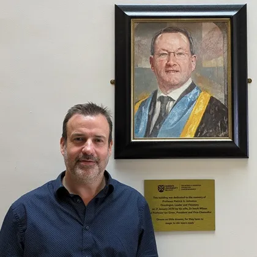
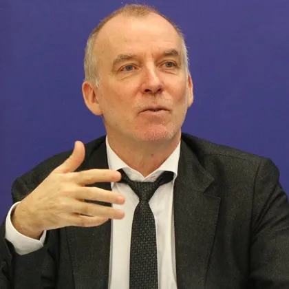

Nicolò Battisti
Torsten Blum
Donal Brennan
Paul Brennan
Stephen Chanock
Mary Coffee

David Collingridge

Alberto Costa

Claire Cronin
Cathal Crowe

Aedin Culhane

William Dahut

Csaba Dégi
Stewart Dickson

Orla Dolan

Stephen Donnelly
Amanda Drury
Neal Freedman
William Gallagher

Satish Gopal
Julie Gralow

Deirdre Heenan

Josephine Hegarty
Tony Holohan

Debbie Keatley
Bob Ladner
Mark Lawler

Dan Longley

Michael Martin

Erin McGreehan

Mairead McGuinness

Francoise Meunier

Mike Morrissey

Jarushka Naidoo

Simon Oberst

Lorraine O'Driscoll
Mairead O'Driscoll

Risteárd Ó Laoide
Kathy Oliver
Averil Power
Tracy Robson
Henry Rodriguez

Philippe Roux
Piotr Rutkowski

Mirsolav Samarzija

Lynn Schuchter
Kieran Sheahan
Isabelle Soerjomataram